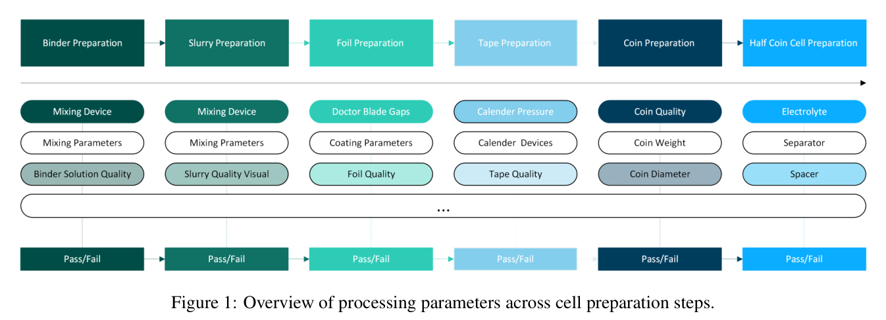
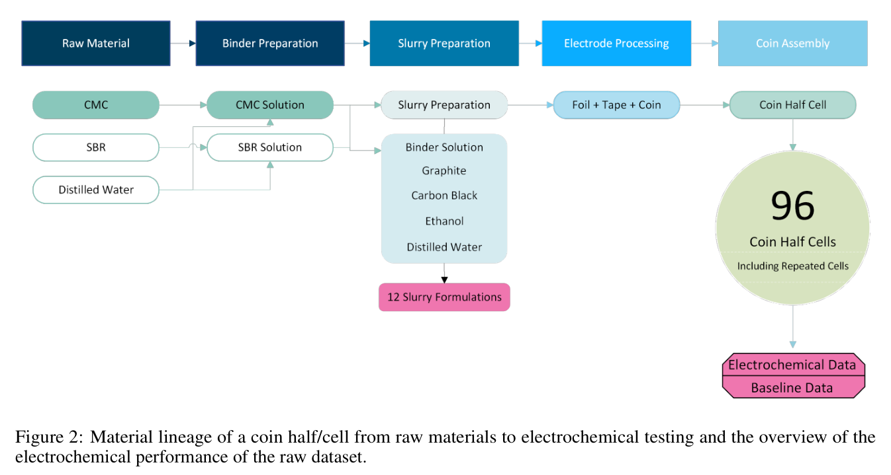

实验设计
Design of Experiment
本研究的目标是借助AI引导的实验设计方法，系统性地探索石墨基负极的配方空间。我们通过综合考虑组分变量和工艺参数，致力于阐明配方与制造选择如何影响电极层面的电化学性能，并识别通过数据驱动优化实现性能提升的机会。
所定义的配方空间涵盖了一系列广泛且经审慎选择的变量，以确保数据具有足够的丰富度以支撑AI/ML建模。如图1所示，这些变量包括粘结剂类型、溶剂类型、固体含量，以及一系列工艺参数，如混合机类型、混合功率、混合时间、压延压力和其他制备条件。这些参数的选择旨在捕捉配方-工艺之间的相互作用及其对关键电极性能指标的直接影响。

在研究的初始阶段，我们从先前针对石墨负极系统的研究中构建了基线数据集。详细的实验描述见第5节。该数据集包含12种不同的浆料配方，每种配方都代表了组分和工艺参数的独特组合。如图2所示，本研究中制备的每个扣式半电池均可追溯至一条明确的材料发展路径，涵盖原材料、粘结剂制备、浆料配方、电极加工和最终电池组装。从这些浆料出发，我们共制备了96个扣式半电池，其中包括针对部分配方制备的重复电池，并对其进行了电化学测试。由此产生的数据集成为后续AI驱动分析的基础。

对于每个数据点，我们使用HTE实验室信息管理系统（LIMS）系统性地记录和管理从原材料规格到电极制备及电池组装的全流程元数据。这确保了数据的安全存储、完全可追溯性，以及通过myHTE实验室软件环境实现的一致性文档记录。为实现公平且有意义的性能比较，所有扣式电池均采用标准化的电化学测试协议进行评估：先进行两个0.1C的化成循环，随后进行两个0.2C循环，再进行26个0.3333C循环。我们提取了关键绩效指标（KPI），包括循环寿命、初始放电容量、第5圈的库仑效率以及第30圈的放电容量，以构建用于AI模型训练的统一基线数据集。
在此阶段之前，所有实验活动和数据处理均独立于Citrine平台进行。整理好的数据集随后被上传至Citrine平台，并在该平台上执行了如图3所示的完整AI引导工作流程。该工作流程包括：按照Citrine提供的标准化Excel模板对数据集进行格式化，随后将其导入Citrine平台以生成初始训练集；基于该训练集构建定制化的AI/ML模型；由领域专家科学家定义搜索空间，以覆盖逆向设计引导优化工作流程所探索的高维参数范围；在纳入量化不确定性的前提下，将候选实验的性能与用户定义的目标和约束条件下的预测性能进行排序比较。